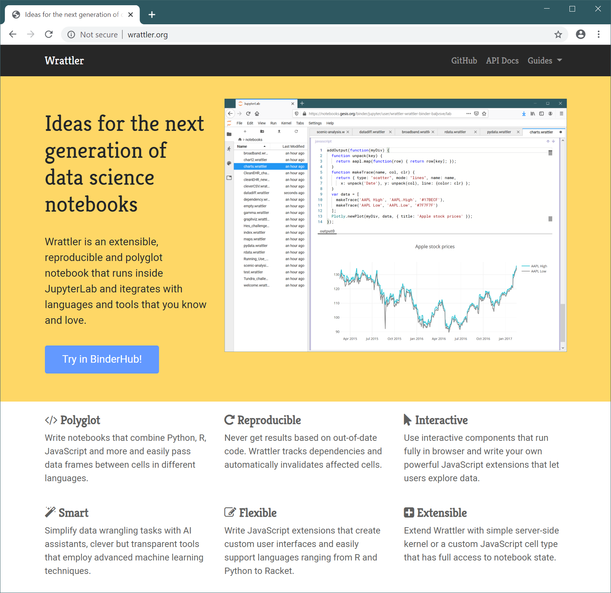

Wrattler: Interactive, smart
and polyglot notebooks
Tomas Petricek, The Alan Turing Institute
What makes data science hard?
Big data is big
Hard-to-find special cases
The Double Anna Karenina principle
Every data set is different
Feedback loops everywhere
Can't say what works until we've done it
Death by a thousand cuts
Many tasks are repetitive
Data science
What tools do we need?
Interactive – give quick feedback
Reproducible – be able to go back
Polyglot – mix tools that work
Smart – get help from the AI
Explainable – no black boxes
DEMO: Wrattler in BinderHub
Traditional notebook architecture

1 Limited reproducibility
2 No rollback of state
3 Limited interaction model
4 One language per kernel
Wrattler system architecture

Wrattler system architecture
1 Versioning and provenance
2 Interactive development
3 Platform for AI assistants
4 Polyglot programming
Recent developments
New in Wrattler over the last 6 months
- Integration with community-driven JupyterLab
- Deployment via BinderHub, both locally and in the cloud
- Integration with AI assistants for data wrangling
- Easy access to dependency graph from notebooks
- Performance and UX improvements
- Experimental languages for dataviz
- Work-in-progress homepage and documentation
DEMO: JupyterLab & Binder deployment
Integrating with standard community-driven environment

JupyterLab and Binder deployment
- Joining the largest data science community
- Try Wrattler as part of your Jupyter project
- Support both "try now" and local deployment
DEMO: Analysis of scenic places
Hosting and showcasing Turing research

DEMO: AI assistants
Simplifying data wrangling with AI assistants

AI assistants
- Semi-automatic data wrangling tools
- Developed as part of the AIDA project
- Simple framework for writing new assistants
DEMO: Transparent data visualizations
- Creating charts with linking & brushing
- From provenance to explaining computations
- Wrattler is great for hosting PL research!
Summary
Platform for Turing data science research
Wrattler
Platform for Turing data science research
New languages and tools for data science
Scenic places and other case studies
AI assistants for data science